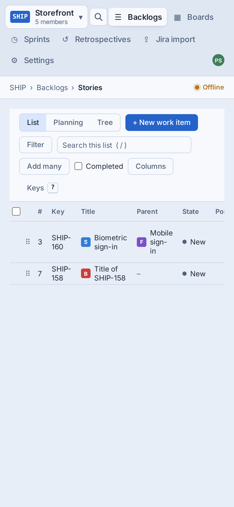
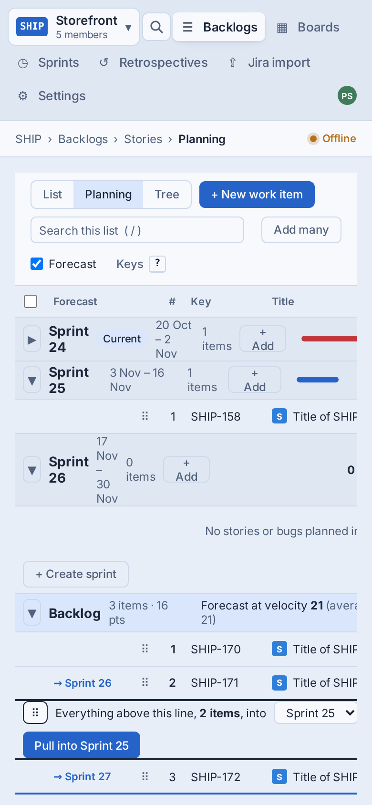
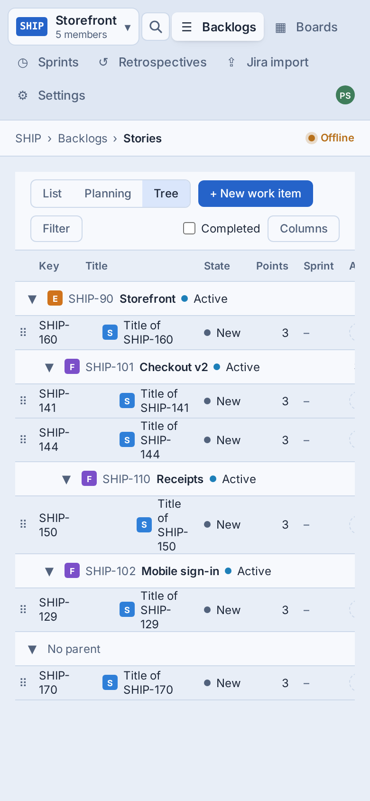
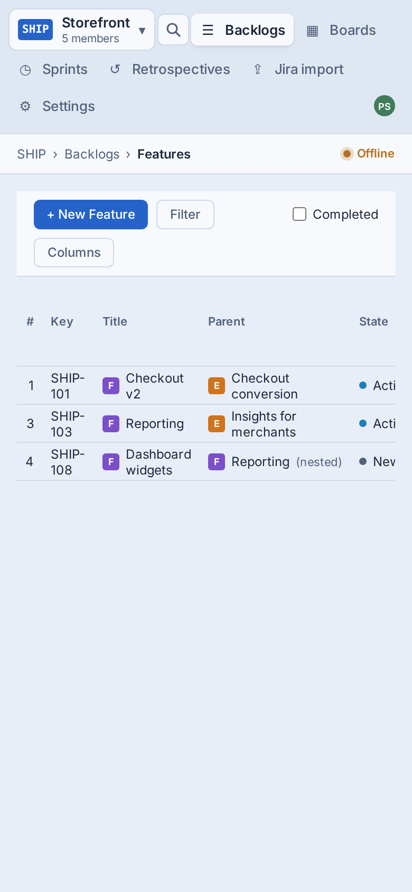
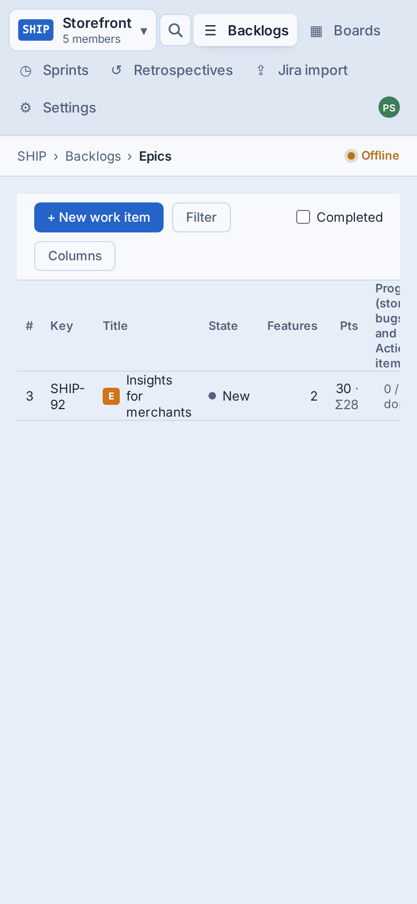

Designs for SHIP-716 (under SHIP-707, mobile web): the Stories backlog in List, Planning and Tree, and the Features and Epics backlogs. One treatment covers all three because they share the toolbar, rows and sheets. It applies at 900px and below, inside the SHIP-713 touch shell. Above 900px nothing changes. The phones below are live: tap the modes, ⋯, Filter, a row's ⋯ or a ? estimate.
design/mobile/backlogs.html
On PR #69 with the touch shell
The real pages at iPhone width, shot from the component test harness with the page-shot fixtures (main as on PR #69's base). The shell's nav on top is SHIP-713's job; everything under it is this story's.





ShipLean's own tokens, light and dark. Rows are two lines, never a table. The toolbar is one row. Everything that was a popover or inline panel is a bottom sheet. Nothing needs a drag. The tags link to the decisions further down.
A rough map against src/ShipLean.Client/src/features/backlog, to check the 13-point estimate. No server changes: every action already exists on the desktop (reorder, sprint move, reparent, bulk set, estimate), so the phone only needs new ways to call them.
| Piece | Today | Change | Size |
|---|---|---|---|
| Touch row | ListRow, PlanningRow, TreeItemRow, LevelRow as table rows | One TouchRow (rank or checkbox, title, meta line, points and avatar, ⋯) that the four render below 900px, plus a progress line for Features and Epics. The tables become lists at that width. | M |
| Toolbar and ⋯ | BacklogToolbar, ModeSwitch, ColumnsMenu | One row: + New, the mode switch, Filter (count), ⋯. Search, Add many, Select, Completed, Forecast and velocity move into the ⋯ sheet. Columns and Keys are hidden. | S |
| Filter | FilterPanel inline | The same clauses, stacked, in the shared Sheet. Chips stay under the toolbar. | S |
| Touch drag (D2) and row ⋯ | Grip already takes the drag listeners alone, with touch-none; ListDnd, PlanningDnd and TreeTable use a 4px PointerSensor | Below 900px the grip becomes the row's left edge (full height, rank on top). Turn on dnd-kit auto-scroll near the edges, and check that a lifted row over a sprint header or Feature header shows the drop hint. The writes are the desktop's. A row action sheet: Open, Points, Sprint, Parent, Move to top, Move to bottom, Select. | M |
| Select mode | SelectionProvider, BulkBar, BulkMenus | Enter from ⋯ or a row's ⋯; checkboxes replace the rank; the bulk bar sits at the bottom and its menus open as sheets (the Sprint sheet shows each sprint's sum). | M |
| Planning | SectionHeader, SectionCapacity, pull line | Section headers as blocks with a full-width capacity bar and a section ⋯. The pull line keeps its sums and Pull, and gets ▲ ▼ to move it one item. | M |
| Tree | TreeGroupRow | Headers carry the path; item rows never indent. | S |
| Estimating | PointsCell, BeforeYouPlan, useCheckQueue | A Points sheet from the ? chip, and the not-estimated queue reusing it ("1 of 3", Skip). | S |
| Tests | desktop page shots, CT specs | Phone page shots for list, planning, tree, features, epics and the main sheets; CT for Move to…, select mode and the pull line's ▲ ▼. | M |
With D2 as drag this still fits 13 points: the handle-only drag exists already, so the work is the bigger handle, auto-scroll and testing on real phones, roughly what Move to… would have cost.
The recommended option is selected. Change any you disagree with, add a note if you like, then press Queue answers once at the bottom. None of these changes a SHIP-805 rule, except D1 B, which would need rule 7 changed first.